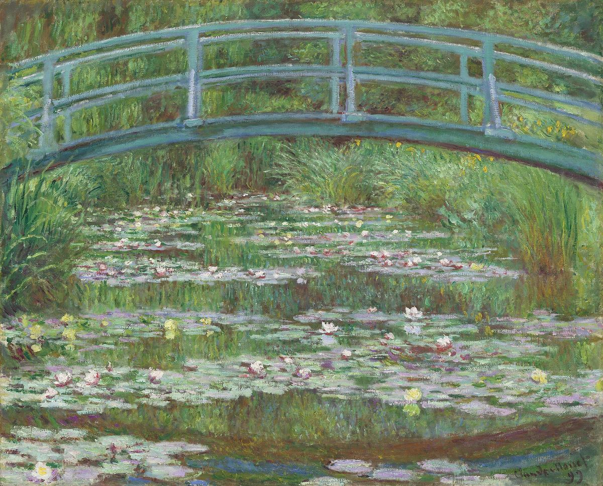

The Japanese Footbridge

Palette
- Artichoke green · your word: Viridian
- Moss · your word: Moss
- Granite gray · your word: Umber
- Sage · your word: Sage
- Hooker's green · your word: Slate
- Grey · your word: Grey
Monet built this view himself: he bought the marshy plot in 1893, diverted a stream to make the pond, and in 1899 painted 12 views of the bridge from the same spot. The palette is almost all green, from sage to moss to near-black shadow, with the bridge a pale blue-green and the lilies small notes of pink and yellow.
Image
Wikimedia Commons · Public domain (CC0)

Hex values are screen approximations. Every page lists its sources.